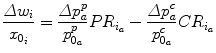
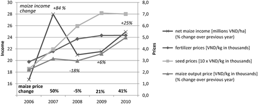
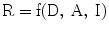
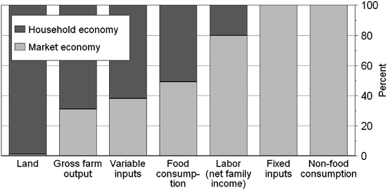
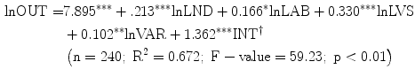

12.1 Introduction
Agricultural input and output markets, as well as rural financial markets, play a key role in the commercialization of smallholder agriculture. With improved access to credit sources and to agricultural input and output markets, smallholders’ transaction costs can be reduced, leaving them in a better position to participate in the market and realize gains from specialization in those agricultural enterprises for which they have a comparative advantage, while relying on the market for the acquisition of other agricultural produce, including food and non-food goods and services. Over the past few decades, this transformation from subsistence to commercial agriculture has been rapid in the mountainous areas of Thailand and Vietnam, as well as elsewhere. Increased commercialization, with related gains in agricultural productivity, has led to a substantial increase in incomes and a corresponding decline in poverty rates.
On the other hand, the increased commercialization of smallholder agriculture can have adverse effects; for example, highly specialized farm households are by definition more dependent on the market than subsistence-oriented households, exposing them to fluctuations in market prices, while more subsistence-oriented households are less affected. Furthermore, economies of scale and scope, plus market risk, dictate that farmers with small farms are somewhat disadvantaged, simply because the transactions costs incurred by market participation are fixed to a significant extent. For example, obtaining a small as opposed to a large loan may carry the same transaction costs in terms of the loan application and repayment processes. In addition, risk preferences differ between socio-economic strata; for example, our analysis found that poor individuals and women are more risk averse than others, and this may inhibit specialization and investments and is often associated with a low demand for credit. Government intervention can help reduce the constraints placed upon poor households in terms of participating in markets, such as redistributive and targeted social policies in the areas of education, infrastructure, health, nutrition, credit and land tenure.
It is beyond the scope of this chapter to empirically explore the determinants of the commercialization of agriculture and its impact on poverty; so instead, we will present and discuss some empirical evidence on topics that remain hotly debated regarding commercialization and poverty. In Sect. 12.2, we investigate how smallholder farmers in northern Vietnam have been affected by the recent food price volatility with respect to their income and consumption levels, while in Sect. 12.3 we quantify the level of market integration among those farm households belonging to the Karen ethnic group in northern Thailand, and assess the effects of market integration on gross farm output and net farm income levels. In Sect. 12.4, we show that risk preferences and discount rates have had an impact upon household credit demand and credit access in northern Vietnam, then in Sect. 12.5 analyze poverty dynamics in the same area between 2007 and 2010, and assess the targeting performance of the poverty reduction and social assistance policies introduced. Section 12.6 concludes with policy implications and recommendations.
12.2 Volatility of Agricultural Commodity Prices and Its Impact on Household Incomes and Consumption
In Vietnam, the period from 2006 to 2010 witnessed substantial fluctuations in agricultural input and output prices, as well as a general upward trend in food, feed and fertilizer prices. In this section, we discuss and report on price developments within the study area based on a representative household survey carried out in Yen Chau district – a mountainous district in north-western Vietnam (Ufer forthcoming).
Yen Chau is one of the poorest districts in the country, with 17 % of households living below the national rural poverty line in 2007. Households in this area are highly dependent on two key crops, these being rice – to a large degree for subsistence purposes and comprising 11 % of the total farmed area and 8.5 % of total consumption expenditures, and maize – the main cash crop and which covers 71 % of the total farmed area and constitutes 65 % of total household cash income. Both crops are cultivated using a high level of inputs and modern hybrid varieties, yet it is predominantly maize which is sold on the market. Approximately half of the households are self-sufficient in rice, with 7 % being net sellers also. In contrast, 97 % of households are net sellers of maize – selling almost all of their produce. Table 12.1 shows percentage changes in the consumer and producer prices of rice, and the producer price of maize over the study period (2007–2010). Table 12.2 shows the static changes that took place over this period in terms of net household incomes, due to the observed price changes.
Table 12.1
Percentage price changes (by group/category) as compared to the previous years in Yen Chau district, Vietnam (2007–2010)
Price change/Year [%] | 2007 | 2008 | 2009 | 2010 | Average |
|---|---|---|---|---|---|
Rice consumer price | 21.2 | 16.7 | 3.6 | 16.5 | 14.5a
|
Rice producer price | 15.6 | 14.9 | −5.3 | 26.5 | 12.9b
|
Maize producer price | 49.6 | −4.7 | 20.9 | 40.7 | 26.6c
|
Table 12.2
Static change in net household incomes due to price changes, by household group/year [%], Yen Chau district, Vietnam
Household group | 2008 | 2009 | 2010 | Average |
|---|---|---|---|---|
Rice price impact/poor rice; net buyer | −7.0 | −1.0 | −4.3 | −4.1 |
Rice + maize price impact/poor rice; net buyer | −10.1 | 47.4 | 44.0 | 27.1 |
Rice price impact/non-poor rice; net buyer | −2.6 | −0.8 | −3.6 | −2.3 |
Rice + maize price impact/non-poor rice; net buyer | −10.8 | 18.7 | 15.2 | 7.4 |
Rice price impact/rice; net seller | 2.1 | −0.7 | 3.7 | 1.7 |
Rice + maize price impact/rice; net seller | −10.4 | 18.7 | 23.2 | 10.5 |
Rice + maize price impact for all households | −8.6 | 23.8 | 23.0 | 12.7 |
Over the five study years, both rice consumer and maize producer prices increased considerably, by approximately 15 % and 27 % per annum respectively (Table 12.1). Using the Net Benefit Ratio (Deaton 1989; Minot and Goletti 2000) we analyzed the static impact of these price increases on net household incomes. The equation for the Net Benefit Ratio expresses the short-term impact of price increases on household welfare before producers or consumers respond by adjusting their production and consumption decisions, as follows:

(12.1)
Where
- Δw i = the change in real income levels for household i due to a price change in commodity a
- x 0i = income (consumption expenditure) for household I over period 0
- Δp a /p 0a = change in producer price (index: p); change in consumer price (index: c)
- PR ia = value of the production of commodity a as a proportion of x io for household i
- CR ia = value of the consumption of commodity a as a proportion of x oi for household i
Since maize producer prices increased much more than rice consumer prices and the contribution of maize sales to the total household income (65 %) was much larger than rice consumption expenditures (8.5 %), the negative impact of higher rice prices was more than compensated for by the positive impact of higher maize selling prices, with the combined effect on net household incomes being around 13 % per year on average. Moreover, all household types benefited due to this trend (Table 12.2).
After 2006, fertilizer prices increased by 10 % and seed prices by 19 % per annum on average (p < 0.01),1 with the largest price increases occurring in 2008 and 2009, though the steady upward trend in terms of maize prices slowed a little in 2008. As well as price changes, regional weather events such as a major drought in 2010, also impacted upon maize production levels, and as a consequence, net maize income levels in real terms were highly volatile, with a rise of about 84 % occurring in 2007 and a decrease of 18 % the year after. However, even with the strong increase in input prices, maize price development in most of the years after 2006 was sufficient to either keep net maize incomes in real terms at the same level, or to even improve net maize incomes year on year (p < 0.01) (Fig. 12.1).2 Income and expenditures in Fig. 12.1 are shown in real terms, having deflated the nominal figures using the official consumer price index (GSO 2011).

Fig. 12.1
Changes in the nominal prices for inputs and maize, plus real net maize incomes in Yen Chau district, Vietnam (2006–2010)
How did households cope with the income volatility which occurred over the study period? For households with low consumption levels and with limited access to insurance mechanisms, which is common in low-income countries, price shocks can lead to a reduction in consumption if they are not mitigated using coping strategies. Hence, the impact of the 2008 maize income shock on household consumption expenditures during the post-harvest period was analyzed using an Ordinary Least Squares (OLS) regression model, one which employs an asset-based approach to social risk management, linking households’ capital endowments with the stability of their consumption expenditures (Siegel and Alwang 1999). The structural equation used in the model can be written as follows:

(12.2)
Where
- R = Resilience: measured as a change in consumption expenditures during the maize post-harvest period (January -April) in 2009, as compared to 2008
- D = Income shock: measured as the decrease in total household income levels due to the decline in maize incomes
- A = Asset base of the household; for example, total cropping area and labor capacity
- I = Idiosyncratic shocks; for example, sickness and crop failures
Our analysis did not find there to have been a negative impact on household consumption expenditures in 2009 due to shocks in 2008 (Table 12.3), and in fact, despite decreases in household income taking place (−21 %), consumption expenditures increased by 20 % during the post-harvest season (January to April) in 2009 as compared to 2008. This consumption expenditure trend is plausible, since the absolute level of maize income in 2008 equaled the absolute level of maize income in 2006 (differences were not statistically significant); hence, the post-harvest season in 2009 might have been expected to achieve normal consumption levels. Furthermore, the increased maize income in 2007 might not have translated into higher regular consumption expenditures during the post-harvest season of 2008 (such as on food, clothing and health), as shown in this study,3 but rather increased extra-ordinary expenditure on items such as durable and investment goods (television sets, livestock or motorbikes), and on savings. This is underlined by the fact that 88 % of affected households did not use any coping strategies to deal with the decline in maize incomes, and those that did apply coping strategies postponed making any long-term investments such as buying a working animal or motorcycle, or they took out a loan. It can therefore be assumed that households invested their extra income in 2007 in durable goods rather than everyday consumption activities. The magnitude of the consumption expenditure increase in 2009 should, however, be interpreted with caution and may have been due to the perception bias caused by the high inflation rates experienced in 2008 (23 %, GSO 2010) and the difficulties we had obtaining precise expenditure data due to recall issues.4 Following this explanation, the size of the household asset base did not appear to help stabilize consumption expenditures, and in fact, the relationship between asset base and consumption expenditures was negative only for households who owned a large amount of land (−4 % points), which can be attributed to the fact that, over the study period, households with more land also had a larger proportion of maize related income (Spearman rho correlation coefficient p < 0.01). The impact of growing maize on household income levels was, therefore, not completely neutral, as confirmed by the positive regression coefficient for the non-maize selling households (that is, households carrying out other agricultural activities and/or taking part in off-farm employment such as government jobs and trade activities). Households that did not sell maize did comparatively better; increasing their consumption expenditure by an additional 41 % points as compared to those households selling maize.
Table 12.3
Determinants of the percentage change in consumption expenditures after the maize harvest in Yen Chau district, Vietnam (2008/2009)
Variable | Mean | Coefficient | ||
|---|---|---|---|---|
Dependent | % Change in consumption expenditures: Jan-Apr 2008/2009 | 20.02 | ||
Hazard proxies | % Change in total household income: 2008/2007 | −21.14 | 0.06 | |
Dummy = 1 if household does not sell maize | 0.08 | 40.70 |
*
| |
Individual shocks | Positive/negative income shocks, in million Vietnamese dong (VND) | −0.53 | 0.68 | |
Number of weddings [during past 2 years] | 0.26 | 9.66 |
*
| |
Number of deaths (dependent members) | 0.06 | 59.89 |
**
| |
Number of deaths (working members) | 0.02 | −18.67 |
**
| |
Number of sick days (dependent members) | 2.92 | −0.39 |
**
| |
Number of sick days (working members) | 2.90 | 0.38 | ||
Dummy = 1 if household experienced a crop failure [during past 2 years] | 0.41 | 19.28 |
**
| |
Asset based proxies | Travel time from household to Yen Chau on motorbike (in minutes) | 43.79 | 0.15 | |
Number of alternative buyers of maize | 3.36 | 1.51 | ||
Total cultivated land per capita (‘000 m2) | 3.48 | −3.70 |
**
| |
Labor capacity = household size* (household members (15–60 years)/all household members) | 0.18 | 42.60 | ||
Number of organizations per adult | 1.50 | 7.14 | ||
Constant | −12.64 | |||
Diagnostics | N = 287 F(14,272) = 2.27
***
R-squared = 0.18 | |||
Another significant influence on household consumption expenditures was exercised by social events and individual shocks. Expensive social events increased consumption expenditure (for example, weddings by 10 % and funerals by 60 %), while the death of a working member decreased consumption expenditure by 19 %, probably due to the decrease in available manpower able to generate an income. Crop failures increased consumption expenditure by 19 %, most of which can be attributed to rice crop failures, since these events forced households to purchase additional rice during the lean season (January to April), the period of our investigation. The analysis above raises the question as to which factors limited the households’ capacity to adapt to maize price fluctuations. One of the factors identified in our research was the limited capacity of households to store maize after the harvest and to sell it later in the season at possibly higher prices. Only 19 % of households owned a permanent shed in the study area; the majority stored maize at home (53 %), with the remaining storage areas being temporary sheds (25 %) and other locations (3 %). The ownership of a permanent storage facility increased significantly the ability of households to store maize at the appropriate quality for a longer period (8.5 weeks) as compared to storing it around the household (6.8 weeks) or in a temporary shed (7.3 weeks) (p < 0.05). Analyzing households’ decision-making in terms of choosing the right time to sell maize in 2010, most mentioned preventing a (further) loss of quality as the single most important reason for doing so (48 % of households), followed by a high price being offered (25 % of households) and the need to pay for inputs (19 %), while the lack of availability of storage facilities was mentioned by just 4 % of households in relation to the time of the first sale (multiple answers possible). During the survey, farmers were asked why they timed the second maize sale as they did, to which they replied that the most important reason was to prevent a (further) quality loss of quality (42 % of households), followed by a high price being offered (30 % of households) and the need to pay for inputs (14 % of households) (Table 12.4).
Table 12.4
Reasons given by households for deciding the time of the maize sale in Yen Chau district, Vietnam (2008/2009)
Reasons mentioned (multiple answers possible; percentage of households mentioning a given reason) | First sale (n = 271) | Second sale (n = 66) |
|---|---|---|
To prevent (further) quality losses | 48.3 | 42.4 |
High price offered | 25.1 | 30.4 |
Need to pay for inputs | 18.8 | 13.6 |
Neighbors selling at same time | 18.5 | 13.6 |
Need to pay for consumption (other than food) | 18.5 | 12.1 |
No storage facilities available | 4.4 | 9.1 |
Other reasonsa
| 13.7 | 12.1 |
Given that a large proportion of households struggle to prevent post-harvest quality losses, an improvement in post-harvest management techniques is needed, in order to: (1) help farmers respond appropriately to maize price fluctuations, and (2) help improve their income levels. Between 2006 and 2008 maize prices showed an increasingly intra-seasonal trend, something which households actively tried to exploit by gradually prolonging the period between the onset of the maize harvest and the selling time – from 3.4 weeks in 2006 to 5.8 weeks in 2008 (p < 0.01). Improved post-harvest management techniques would, therefore, support the existing adaptation strategies used by the households and help extend the potential sales period. Second, better quality maize fetches a higher price on the market, and this could contribute to an increase in maize incomes. We also tested the hypothesis that smallholders face monopolistic buyers when selling their produce, finding, however, that there are a number of traders available who buy produce from the villages and that there appears to be a healthy level of competition among them. Almost all the farmers reported that they are able to negotiate with a number of traders and can therefore choose to wait for the most acceptable price. In 2010, the average number of traders to choose from was 4.6 at the time of the first sale, 4.4 at the time of the second and third sale, and 4.3 at the time of the fourth sale. No significant correlation was found between the number of maize traders accessible to farmers and the maize output price; instead it was found that maize prices were influenced by the education level of the households (we obtained positive Spearman rho correlation coefficients in three of the 5 years between 2006 and 2010 (p < 0.01)) and the household’s distance from a paved road (we obtained negative Spearman rho correlation coefficients in all the years between 2006 and 2010 (p < 0.01)). Therefore, poorer households were particularly disadvantaged, as they tended to have both lower education levels (Spearman rho correlation coefficient p < 0.01) and lived further away from a paved road (Spearman rho correlation coefficient p < 0.05). The influence of education levels on the maize price received may possibly stem from the fact that those who are better educated are more likely to have a greater knowledge of financial issues and improved negotiation skills. The finding here that farmers without good road communications tended to obtain lower maize prices confirms the findings of Keil et al. (2008).
12.3 The Effect of Agricultural Commercialization on the Incomes of Ethnic Minority Farmers
There has been considerable debate among policymakers and academics in Thailand as to whether the commercialization of agriculture is a change for the better. Some policy documents have attributed social problems and economic instability to the excessive influence of market forces on Thai society (NESDB 2002; UNDP 2007). Regarding mountainous areas, the Thai media often link agricultural commercialization to deforestation, the occurrence of floods and droughts, rivers being poisoned with agrochemicals, and farmers being laden with debts (Forsyth and Walker 2008). A Thai government resolution in 1998 stated that communities located in certain conservation areas – which almost entirely refers to upland communities – must be strictly contained within demarcated residential and agricultural areas and must focus on subsistence production (Forsyth and Walker 2008: 50). These statements stand in sharp contrast to the reality on the ground. After three decades of economic growth in Thailand, pure subsistence systems are nowadays difficult to find, with almost all communities in mountainous areas growing some form of cash crop. In order to add to this debate about agricultural commercialization in Thailand, during our research we quantified the level of market integration to be found among farm households in a mountainous area, and assessed the effect of market integration on farm performance and economic well-being.
The study used a stratified random sample of 240 farm households in Chiang Mai province belonging to the Karen ethnic minority. The whole province was divided into four strata based on relative distance to the nearest markets, with three Karen villages then randomly selected from each stratum, giving 12 villages in total, from which 20 households were then randomly selected from each. Sampling weights were used in all parts of the analysis to correct for selection bias. Using questionnaires, we collected farm-level data on farm production and household consumption activities, and for each crop and livestock product, as well as input and consumption item, we asked whether it had originated on-farm or whether off-farm transactions were involved. The reference period for the survey was 2006, with the results published in Tipraqsa and Schreinemachers (2009).
Fig. 12.2 shows the extent to which households were integrated into seven types of markets, with the level of market integration defined as the value of goods transacted in markets as a share of the total value of goods produced by or consumed in the household. The figure shows that Karen households relied heavily on rice production for their own consumption, with only 31 % of the gross farm output sold; however, the market economy appeared more important on the consumption side, with 49 % of annual food expenditures purchased from the market, rather than produced on-farm. The large share of market integration on the consumption side reflects the increasing need to generate cash in order to buy factory goods and basic commodities such as school items. The importance of market transactions was also confirmed by the total family income, as the average household derived 80 % of its net income from a wide range of sources involving market transactions, such as off-farm labor, family businesses and the making of crafts.

Fig. 12.2
Average market share of farm inputs, gross outputs, consumption and labor, for 12 Karen villages in Chiang Mai province, Thailand (2006). Note: Return on labor is defined as the net family income, calculated as the sum of cash and non-cash farm earnings, plus the earnings from off-farm labor
We then quantified the impact of output market integration on farm efficiency and net per capita incomes. During the first stage of the analysis we identified the determinants of farm output market integration by regressing the level of output market integration based on distance to output markets (in minutes), the number of road connections to the village, the number of city visits made by the household head per year, the existence of a rice bank in the village and the crop diversification index (CDI). The CDI was calculated as 1-Herfindahl index, with the Herfindahl index defined as the sum of the squared crop area proportions for each crop. The CDI ranges from 0 (perfect specialization) to 1 (perfect diversification), and because farm output market integration is shown as a proportion, we constrained the predicted values to between zero and one by using generalized linear modeling (GLM) with a binomial family for the error distribution and a logit link for the dependent variable (Papke and Wooldridge 1996). All variables were statistically significant (p < 0.10), but the existence of a rice bank in the village surprisingly enough had a negative sign. For the second stage of our analysis we tested whether or not market integration contributes to greater farm efficiency and higher net household incomes.
Because it is conceptually unclear if market integration drives farm output and farm incomes, or vice versa, we tested the exogeneity of market integration by including the residuals from the first stage equation as an independent variable in two structural equations for farm output and net household income, those estimated using OLS. The significance level of the residuals was 0.123 for the output equation and 0.667 for the farm income equation, which suggests that endogeneity may not have been an issue here. We nevertheless used the Two-Stage Least Squares (2SLS) approach for the farm output equation, as the p-value was relatively low, and a normal OLS model for the farm income equation. In the first structural equation, we used a farm level production function of the Cobb-Douglas form, in which the gross farm output (OUT) was regressed based on five independent variables, including land (LND in hectares), labor (LAB in man-days), livestock (LVS, aggregated into tropical livestock units) and variable inputs (VAR in baht), plus the predicted farm output market integration values (INT†) as estimated during the first stage of the analysis. The predictive power of the model was 0.67 and all parameter estimates were significant at a 10 % confidence interval, and had, as expected, a positive sign, as shown in (12.3). A higher level of market integration, with all other independent variables held constant, was positively and significantly (p < 0.01) associated with greater levels of farm output. Market integration could thus be seen to improve the efficiency of farm production.

(12.3)
The second model regressed the annual net per capita income (INC/CAP) based on the per capita availability of land (LND/CAP), farm labor (LAB/CAP), livestock (LVS/CAP) and variable inputs (VAR/CAP), as well as the percentage of labor time spent working outside the farm (PNF) and the level of farm output market integration (INT). The predictive power of the model was 0.32 and the coefficient for farm output market integration was positive and significant, as shown in (12.4). Based on the marginal effect of market integration, we can conclude that for the average farm household, a 1 % increase in farm output market integration, while keeping all other variables constant, would add 0.21 % to the net per capita income. For a complete overview of the results, we refer to Tipraqsa and Schreinemachers (2009).![$$ \begin{aligned} \mathrm{Ln}\ \left( {\mathrm{INC}/\mathrm{CAP}} \right)= & 7.96{3^{*** }}+0.23{7^{*** }}\ln \left( {\mathrm{LND}/\mathrm{CAP}} \right)+0.34{4^{*** }}\ln \left( {\mathrm{LAB}/\mathrm{CAP}} \right) \\ & +0.18{2^{*** }}\ln \left( {\mathrm{LVS}/\mathrm{CAP}} \right)-0.109\ \ln \left( {\mathrm{VAR}/\mathrm{CAP}} \right) \\ & +0.020{2^{*** }}\ln \left( {\mathrm{PNF}} \right)+0.86{9^{*** }}\mathrm{INT} \\ & \left( {\mathrm{n}=227;\ {{\mathrm{R}}^2}=0.324;\ \mathrm{F}-\mathrm{value}=19.48;\ \mathrm{p}<0.01} \right) \\ \end{aligned} $$](A308010_1_En_12_Chapter_Equ00124.gif)
(12.4)
Therefore, the results confirm that ethnic minority farmers in northern Thailand are well-integrated into input and output markets, and that improvements in infrastructure such as roads and the reduction in time required to reach output markets, have contributed to increasing farm output market integration, which in turn has had a significant and positive impact on farm efficiency and per capita incomes. There are, however, challenges for those farmers seeking to integrate their farm production activities into the market. For instance, much knowledge is needed to manage new crops and inputs in a sustainable way, and Chaps. 4 and 7 of this book have shown that during the process of agricultural commercialization, farmers are increasingly exposed to risks from pesticide use and soil loss, while the previous section of this chapter (see 12.2) has revealed the importance of price volatility.
12.4 The Relationship of Risk Preferences and Discount Rates with Credit Access and Demand
This section discusses our analysis of risk preferences and discount rates, as described in Chap. 5. Risk preferences were assessed using a multiple price list technique and involving actual payouts, as well as through a self-assessment questionnaire in which respondents identified the level of risk they were willing to take on a scale of 0–10. Discount rates provide information on how much future consumption one is willing to forego for immediate consumption purposes, and here were assessed using a multiple price list technique, though payouts were hypothetical. Both risk preferences and discount rates were assessed for the household heads and their spouses – if applicable, and therefore represent individual-level data. Please refer to Chap. 5 for more details on the methodology used.
Before presenting the results on how risk aversion and discount rates relate to credit access and demand, we will briefly describe the relationship between risk aversion and discount rates. In this study, we found a statistically significant negative correlation between individual discount rates and risk aversion, as obtained using the self-assessment method (Pearson coefficient = −0.219, p < 0.01). In other words, lower individual discount rates (i.e., more patience) were associated with higher levels of risk aversion (i.e., less willingness to take risks). Two other studies have also found a similar relationship between risk aversion and discount rates (Anderhub et al. 2001; Güth et al. 2008).
It is important to understand the relationship between credit access/demand and risk preferences/discount rates, so that the underlying reasons as to why credit is demanded can be better understood. For example, are risk averse people more or less likely to demand credit? Are people who have higher discount rates and are therefore less patient more or less likely to demand credit? Table 12.5 shows mean risk preferences (higher numbers indicate more risk aversion) and discount rates (higher numbers indicate less patience) as differentiated by a positive demand for credit in 2007. Positive demand includes both potential and actual demand for credit, and includes not only households who applied for credit but also households who wanted to apply for credit but were discouraged by; for example, the fear of being rejected. Unlike risk preferences and discount rates which were assessed at the individual-level, credit data were calculated at the household-level.
Table 12.5
Mean risk preferences and discount rates (assessed in 2011) differentiated by a positive demand (potential and actual) for credit in Yen Chau district, Vietnam during 2007
Risk preferences method | Source of credit | |||||||||||||||||
|---|---|---|---|---|---|---|---|---|---|---|---|---|---|---|---|---|---|---|
Formal (VBARD, VBSP) | VBARD | VBSP | Semi-formal | Private lendersa
| Relatives and friends | |||||||||||||
No | Yes | No | Yes | No | Yes | No | Yes | No | Yes | No | Yes | |||||||
Multiple price list | 5.68 | 5.59 | 5.63 | 5.71 | 5.68 | 5.57 | 5.73 | 5.51 | 5.72 | 5.50 | 5.72 | 5.50 | ||||||
Self-assessment | 5.42 |
**
| 5.15 |
**
| 5.33 | 5.19 | 5.41 |
**
| 5.09 |
**
| 5.31 | 5.29 | 5.37 | 5.21 | 5.36 | 5.21 | ||
Discount rate (%) | 73.1 | 80.0 | 73.7 |
*
| 86.4 |
*
| 74.2 | 79.6 | 77.5 | 73.8 | 74.4 | 78.8 | 74.4 | 78.8 | ||||
In Yen Chau district there are two formal lenders, both of which are government-owned: the Vietnam Bank for Social Policies (VBSP) and the Vietnam Bank for Agriculture and Rural Development (VBARD). The VBSP’s mandate is to target the poor, that is, those with incomes below the poverty line, and offer them subsidized credit. As shown in Chap. 5, the VBSP fails to achieve its target objective, whereas the VBARD is a commercially-oriented bank and so does not. The results show that respondents living in households which had no positive demand for credit from the VBSP were, on average, significantly more risk averse according to the self-assessment method than respondents living in households which had a positive demand for credit. In terms of how discount rates and a positive demand for credit were related, the only statistically significant difference in mean discount rates with regards to a positive credit demand was for credit demanded from the VBARD, as the mean discount rate for respondents living in households with a positive demand for credit from the VBARD was significantly greater than that of respondents living in households with no positive demand for credit from the same bank.
We can also see from the table that individuals had very high discount rates, ranging between 73 % and 85 %, indicating that respondents may not consider formal sources of credit offering low interest rate loans to be available to them, because otherwise the discount rate would better reflect the market discount rate, which tends to be much lower.
Table 12.6 reports the Pearson correlation coefficients found for risk preferences and discount rates, and the total amount of credit demanded from various sources. Households who wanted to apply for credit but who were discouraged from doing so were recorded as having demanded 0 VND worth of credit. The results show that higher risk aversion was associated with lower credit demand across all sources, with a statistically significant correlation. In other words, people more willing to take risks were more likely to live in households which demanded more credit. These results support the results shown in Table 12.5, that risk avoidance is negatively associated with credit demand. Statistically significant correlations between discount rates and the amount of credit demanded were all positive, indicating that higher amounts of credit demanded from a household were associated with higher discount rates (meaning less patience) from individuals living in that household. This too supports the results shown in Table 12.5.
Table 12.6
Correlations between risk preferences/discount rates and amounts of credit demanded in Yen Chau district, Vietnam (2011)
Risk preferences method | Source of credit | |||||||||
|---|---|---|---|---|---|---|---|---|---|---|
Formal sources (VBARD, VBSP) | VBARD | VBSP | Semi-formal sources | Private lenders | Relatives and friends | |||||
Multiple price list | −0.146
***
| −0.120
***
| −0.161
***
| −0.055 | 0.030 | −0.107
**
| ||||
Self-assessment | −0.078
*
| −0.073
*
| −0.042 | −0.002 | −0.061 | −0.050 | ||||
Discount rate (%) | 0.132
***
| 0.119
***
| 0.092
**
| −0.060 | −0.029 | 0.081
*
| ||||
We now turn to the question of how risk preferences and discount rates are correlated with potential credit access. In our study, potential credit access was measured as the total amount that the households could borrow from a particular source for various needs, given the household’s situation at the time of the survey in 2011. Total potential credit access was calculated as the sum of potential credit access across thirteen sources: VBSP, VBARD, unions, the village board, the extension service, non-governmental and international organizations, government companies, private companies, informal credit groups, money lenders, shop keepers, relatives and friends/neighbors. We would expect that households able to borrow more would be less risk averse because they have a higher amount of credit they can fall back on in times of need. Pearson correlations between potential credit access and risk preferences are shown in Table 12.7. All statistically significant correlation coefficients were negative, indicating that higher degrees of risk aversion were associated with lower potential credit access. The correlation was statistically significant for total potential credit access, as well as for potential credit access from VBARD, the unions, money lenders, shopkeepers, relatives and friends. This correlation was in the expected direction, so that individuals who were more risk averse were living in households that were able to borrow less. The results demonstrate that an individual’s risk aversion was related to the household situation, as measured through potential credit access levels.
Table 12.7
Correlations between risk preferences/discount rates and the level of potential credit access in Yen Chau district, Vietnam (2011)
Risk preferences method | VBARD | VBSP | Unions | Informal credit groups | Money lenders | Shopkeepers | Relatives | Friends | Total | ||||||||
|---|---|---|---|---|---|---|---|---|---|---|---|---|---|---|---|---|---|
Multiple price list | −0.098 |
**
| −0.053 | −0.094 |
**
| −0.028 | −0.095 |
**
| −0.076 |
*
| −0.212 |
***
| −0.087 |
**
| −0.138 |
***
| |
Self-assessment | −0.129 |
***
| −0.020 | −0.011 | 0.016 | −0.037 | −0.117 |
***
| −0.025 | −0.096 |
**
| −0.111 |
***
| ||||
Discount rate (%) | 0.038 | −0.082 |
*
| 0.028 | 0.053 | −0.056 | −0.019 | −0.050 | −0.061 | −0.032 | |||||||
Correlations between potential credit access and individual discount rates are also shown in Table 12.7. Most correlation coefficients are shown as negative, indicating that higher potential credit was associated with lower individual discount rates; however, the correlation was statistically significant for potential credit from the VBSP only.
This result somewhat contradicts the earlier findings – that discount rates are positively associated with a positive demand for credit and with actual credit demanded; however, a positive demand for credit and the actual amount of credit demanded are different from the potential amount a household should be able to borrow.
The above analyses offer an insight into how risk aversion and discount rates are associated with credit demand. What we show here is a clear negative relationship between risk aversion and a positive demand for credit, the amount of credit demanded as well as total potential credit access. This indicates that more risk averse individuals live in households which not only demand less credit, but which also have lower credit access levels. We also found a negative relationship between individual discount rates and a positive demand for credit, and the amount of credit demanded, indicating that more patient individuals live in households which demand less credit. The question of how an individual’s risk preferences and discount rates interact with credit demand remains open. For example, does an individual’s risk aversion outweigh his or her discount rate in terms of the impact on credit demand, or is an individual’s discount rate more important than risk aversion? Further analysis is needed to answer such questions; nevertheless, the above results can be used to better target credit at people who are more likely to demand it – those who are less risk averse and those with higher discount rates.
12.5 The Dynamics of Poverty in Yen Chau District, Vietnam
Vietnam has introduced, mainly under its Poverty Reduction and Hunger Eradication Program, several policies that target poor households with services such as primary education, housing and subsidized credit. In this section we use data on household expenditures collected from a random sample of panel households in 2007 and 2010, to analyze poverty dynamics and to identify the level of performance of these policies. The analysis of expenditure data and income poverty was based on the Living Standard Measurement Survey (LSMS) of the World Bank, which is described in detail by Grosh and Glewwe (1998; 2000). In accordance with Decision 170, as issued by the Office of the Prime Minister and which specified income poverty lines for the period 2006–2010, the Ministry of Labor, Invalids and Social Affairs (MOLISA) assesses poor households in order to determine how to best allocate available resources at the local level (MOLISA 2009). As a supposed means testing method, the MOLISA tool (MOLISA 2007) considers a household poor if its monthly income per capita is below the established thresholds of 260,000 VND and 200,000 VND for urban and rural areas respectively (The Prime Minister of Government 2005). These poverty lines have remained unchanged for several years despite double-digit annual inflation rates; thus, the rural poverty line used in our analysis was 11,025 VND per day per capita (for 2010), a line that was adjusted in line with the official consumer price index. Table 12.8 shows the poverty incidence for three groups of households: the poor – with incomes below the poverty line, the nearly-poor – with per capita daily expenditures of less than 130 % of the poverty line (The Prime Minister of Government 2005; 2010) and the non-poor – who had per capita daily expenditures above 130 % of the poverty line.
Table 12.8
Poverty incidence and inequality measures in Yen Chau district, Vietnam
Year | Mean per capita daily expenditure (1,000 VND) | Poverty status of households (%) | Inequality measures | ||||
|---|---|---|---|---|---|---|---|
Poor | Nearly poor | Non-poor | Theil’T | Theil’L | Atkinson | ||
2007 | 15.495 | 16.9 | 17.2 | 65.9 | 0.09 | 0.10 | 0.38 |
2010 | 19.405 | 12.5 | 12.8 | 74.7 | 0.06 | 0.07 | 0.28 |
The results show that household living standards improved between 2007 and 2010, which is consistent with overall estimates of poverty decline in Vietnam during this period. As calculated by the GSO, the poverty rates for the whole country decreased from 15.5 % in 2006 to 10.7 % in 2010; moreover, all three inequality measures i.e., Theil’T, Theil’L and Atkinson (Haughton and Khandker 2009) reported in Table 12.8 show that poverty inequality was lower in 2010 when compared to 2007 (Van Dinh forthcoming).
Table 12.9 shows the dynamics of poverty. Households in the period 2007–2010 were split into four categories: the never-poor, those escaping from poverty, those entering poverty and the chronically poor. These categories were based on changes in the poverty status of households between 2007 and 2010; for example, the never-poor households were identified as those not poor in both years, while the entering poverty households started off not poor in 2007 but had become so by 2010. We also further differentiated between low-lying areas and upland areas in Yen Chau district, as well as by ethnic group, as there are distinct differences in poverty levels between these groups.
Table 12.9
Dynamics of poverty in Yen Chau district, Vietnam, for 2007–2010 (%)
Poverty status of households: 2007–2010 | ||||||
|---|---|---|---|---|---|---|
% of all households | Never- poor | Escaping from poverty | Entering poverty | Chronically poor | ||
All households | 100 | 79.1 | 8.4 | 4.1 | 8.4 | |
Residence | Lowland | 85.2 | 89.6 | 4.8 | 2.8 | 2.8 |
Upland | 14.8 | 18.9 | 29.0 | 11.5 | 40.6 | |
Ethnicity | Thai | 75.0 | 90.9 | 4.5 | 2.3 | 2.3 |
Kinh | 9.5 | 74.7 | 10.5 | 7.4 | 7.4 | |
Hmong and other | 15.5 | 24.0 | 26.0 | 11.0 | 39.0 | |
Poverty status in 2007 | Poor | 16.9 | 0.0 | 50.0 | 0.0 | 50.0 |
Nearly poor | 17.2 | 86.1 | 0.0 | 13.9 | 0.0 | |
Non-poor | 65.9 | 97.4 | 0.0 | 2.6 | 0.0 | |
As shown by Neef et al. (2002), Kinh/Thai households predominantly live in lowland villages, so here they benefitted from better infrastructure facilities such as an electricity supply and good access to markets. From Table 12.9 we see that the Kinh/Thai were better-off by 79.7 % on average than the other households, and were therefore in the non-poor category. The Hmong and other ethnic households, however, lagged behind, since they are predominantly located in upland villages; their poor households constituted 61.6 % of the total number of poor households ((1.7 + 6.0)/12.5). As much as 79.1 % of households were in the never-poor category, while 8.4 % of households were chronically poor, consisting mainly of the Hmong and other ethnic minorities. The share of households experiencing a change in their poverty status was 12.5 %, of which 8.4 % escaped from poverty and 4.1 % entered poverty.
We now turn to analyzing the performance of policies aimed at assisting the poor (Van Dinh forthcoming). We asked the panel households in 2007 and 2010 to rank, on a scale of 1–5 (1 = very poor access, 5 = very good access), their level of access to various services and to safety nets considered important in terms of improving their living standards in the research area. As mentioned before, because of the inherent poverty dynamics in the study area, Table 12.10 shows all figures based on changes in household poverty status, as determined by the survey.
Table 12.10
Households self-reported ranking of access to services and safety nets (on a scale of 1–5) in Yen Chau district, Vietnam
Services | Year | Poverty status of households: 2007–2010 | Significance testa
| |||
|---|---|---|---|---|---|---|
Never poor | Escaping poverty | Entering poverty | Chronic poor | |||
Education/schools | 2007 | 4.01 | 3.74 | 3.42 | 3.78 | n.s |
2010 | 3.69 | 3.74 | 3.72 | 3.69 | n.s | |
Health services/clinic | 2007 | 3.08 | 3.02 | 3.77 | 3.28 | n.s |
2010 | 3.29 | 3.54 | 3.32 | 2.94 | n.s | |
Job training/employment | 2007 | 2.31 | 2.33 | 2.12 | 2.24 | n.s |
2010 | 2.19 | 2.14 | 1.85 | 2.01 | n.s | |
Credit | 2007 | 3.27 | 3.23 | 2.92 | 2.87 | n.s |
2010 | 3.23 | 2.92 | 2.67 | 2.69 |
*
| |
Housing assistance | 2007 | 2.85 | 3.14 | 3.33 | 3.16 | n.s |
2010 | 2.85 | 3.00 | 2.87 | 2.90 | n.s | |
Irrigation services | 2007 | 2.52 | 2.27 | 2.00 | 1.81 |
*
|
2010 | 2.68 | 2.54 | 2.33 | 1.82 |
*
| |
Agricultural extension | 2007 | 3.12 | 3.20 | 2.83 | 3.12 | n.s |
2010 | 2.67 | 2.86 | 2.29 | 2.51 | n.s | |
Table 12.10 shows averages of the self-reported ranking of access to different types of services and safety nets. The table is further differentiated by year and by the poverty status of households for the period 2007–2010. An ANOVA test showed no significant differences between these four poverty groups for all years, except for access to credit in 2010 and irrigation in the years 2007 and 2010. Respondents stated that they had fairly good access to education/schools, health services/clinics, housing assistance and agricultural extension over this period; however, regardless of the poverty status, in all years, access to job training and employment services was considered as not being good. Low significance values imply that at least one group differed significantly from others with respect to its mean access to credit in 2010, and to irrigation in 2007 and 2010. To find out where the differences lay, we used post hoc tests for pairwise comparisons using the Statistical Package for the Social Sciences (SPSS). These post hoc tests (not reported here, for brevity) show that the chronically poor differed significantly from the never-poor with respect to their self-reported levels of access to credit and finance in 2010. While the never-poor had access to credit/finance on a scale value of 3.23, the chronically poor specified their access as being only 2.69. The chronically poor’s level of access to water for irrigation was qualified as not good in both years, but, here again, there was a significant difference found between the chronically poor and the never-poor. This can be explained by the fact that the chronically poor were mainly from Hmong/other ethnic group households living in upland villages.
In practice, the local authorities define those who are poor in a very different way to MOLISA (2007) when using its poverty assessment method (Nguyen and Rama 2007; World Bank 2006). The selection of those considered poor in Yan Chau and so the beneficiaries of national targeted programs for poverty reduction, was done through a voting system during the study period. The various panel households involved in the process of classifying the beneficiaries of government programs targeting the poor in the study area are presented in Table 12.11.
Table 12.11
Households involved in defining the scope of pro-poor programs in Yen Chau district, Vietnam for 2008–2009, shown as % of households in the poor and non-poor groups
Defining beneficiaries of: | Year | Percentage of households involved in the program among their populationa
| Percentage of households unaware of the program among their population | |||
|---|---|---|---|---|---|---|
Poor | Non-poor | Poor | Non-poor | |||
Loans with low interest rates | 2008 | 67.6 | 76.8 |
*
| 8.1 | 1.2 |
2009 | 70.3 | 76.1 |
*
| 8.1 | 1.2 | |
Support for accommodation/house repairs/construction | 2008 | 72.9 | 74.9 |
*
| 8.1 | 1.5 |
2009 | 70.3 | 73.7 |
**
| 8.1 | 1.9 | |
Monetary assistance | 2008 | 72.9 | 73.7 | 5.4 | 1.5 | |
2009 | 70.2 | 68.3 | 5.4 | 3.8 | ||
As shown in Table 12.11, in 2008 and 2009 poor households participated less than non-poor households in defining which households became eligible for the pro-poor program. With the exception of the provision of monetary assistance, the observed differences were statistically significant. The two columns on the right side of Table 12.11 show that the poor were more frequently less aware of the existence of the program, suggesting that the current policy does not inform the poor adequately about poverty reduction programs and that the poor are less likely to have a voice in selecting those that become eligible for receiving assistance from the government. Moreover, the final list of poor households being eligible for assistance from the three programs was decided by commune authorities, who were, however, incentivized to reduce the number of poor households included by about 2 % points each year in order to achieve – at least on paper – the declared objectives of the national target program on poverty alleviation for 2010.5 Poverty rates reported by commune authorities are, without a doubt, generally influenced by such forms of manipulation, which in turn are affected by social, political, administrative and budgetary factors.
When measuring the effectiveness and performance of such policies, five accuracy ratios are often used (IRIS 2005), these being: poverty accuracy, under-coverage, leakage, poverty incidence error and balanced poverty accuracy criterion (as defined in Table 12.12).
Table 12.12
Definition of accuracy ratios
Accuracy ratios | Definitions |
|---|---|
Poverty accuracy | Households correctly predicted as poor, expressed as a percentage of the total number of poor |
Under-coverage | Error in predicting poor households as non-poor, expressed as a percentage of the total number of poor |
Leakage | Error in predicting non-poor households as poor, expressed as a percentage of the total number of poor |
Poverty Incidence Error (PIE) | Difference between the predicted and the actual (observed) poverty incidence, measured in percentage points |
Balanced Poverty Accuracy Criterion (BPAC) | Poverty accuracy minus the absolute difference between under-coverage and leakage, expressed in percentage points |
In evaluating the performance of the policies, under-coverage and leakage are considered errors of exclusion and inclusion respectively, and as shown by Coady et al. (2004), these errors cannot be avoided at the same time, as reducing one type of error may cause the other to increase. The error of inclusion wastes program resources, while that of exclusion makes a program ineffective at reducing poverty. A perfect model has a BPAC value of 100 % and a Poverty Incidence Error (PIE) of 0 %, implying that the poverty accuracy is 100 % while the difference between under-coverage and leakage is zero. A perfect model with a PIE of zero perfectly estimates the actual poverty headcount index in a population (IRIS 2005). A PIE of zero, however, can also be achieved simply by attaining the same level of under-coverage and leakage, so that the two errors cancel each other out (van Bastelaer and Zeller 2006). The efficiency of the targeted study programs in the study area, as measured by under-coverage and leakage, are shown in Table 12.13.
Table 12.13
Efficiency of policies in the study area of Yen Chau district, Vietnam (%)
Services/transfer | Year | ||
|---|---|---|---|
2008 | 2009 | ||
Loan with low interest rates | Under-coverage | 94.6 | 75.7 |
Leakage | 94.6 | 94.6 | |
Accommodation support | Under-coverage | 94.6 | 97.3 |
Leakage | 16.2 | 16.2 | |
Monetary assistance | Under-coverage | 54.1 | 59.5 |
Leakage | 70.3 | 70.3 | |
Coady and Skoufias (2001) rightly point out that under-coverage and leakage are not strong enough to detect whether or not targeted programs are efficient, as it also matters how much the poor receive compared to the non-poor. Table 12.14 show the level of access the panel households had to loans with low interest rates, as provided by the Vietnam Bank for Social Policies (VBSP) in 2008 and 2009. We differentiated the households further by the four groupings first defined in Table 12.9.
Table 12.14
Access to VBSP loans with low interest rates in Yen Chau district, Vietnam
Year | Poverty status of households in 2007–2010 | Significance testa
| ||||
|---|---|---|---|---|---|---|
Never poor | Escaping poverty | Entering poverty | Chronically poor | |||
2008 | Percentage of applications among group population | 18.8 | 4.0 | 0.0 | 12.0 |
*
|
Percentage of beneficiaries among group population | 14.5 | 4.0 | 0.0 | 8.0 | n.s | |
Means of loans (1,000 VND) | 1,593.1 | 200.0 | 0.0 | 660.0 | n.s | |
Percentage of total loan amount going to… | 94.5 | 1.3 | 0.0 | 4.2 | ||
2009 | Percentage of applications among group population | 17.5 | 24.0 | 8.3 | 36.0 | n.s |
Percentage of beneficiaries among group population | 13.2 | 16.0 | 8.3 | 32.0 |
**
| |
Means of loans (1,000 VND) | 1,999.5 | 1,640.0 | 1,250.0 | 2,160.0 | n.s | |
Percentage of total loan amount going to… | 80.1 | 7.1 | 2.6 | 10.2 | ||
Our results show that households which had never been poor submitted more VBSP applications than the chronically poor in 2008, to a significant degree (p < 0.01). However, in 2009, the share of applicants among the chronically poor was higher than among those who had never been poor; moreover, 32 % of the chronically poor received a loan of an average amount of 2.1 million VND, as compared to only 13.2 % of those who had never been poor, who received about 2 million VND each. Despite the somewhat improved targeting in 2009, 80.1 % of total loan amounts disbursed by the VBSP in 2009 were still given to the never-poor group of households, a result showing that the VBSP failed in its mandate to target the poor with loans. The level of leakage from the VBSP credit program is generally considerable, such that the program is likely to increase income inequality instead of reducing poverty among the poor. Moreover, the high level of subsidies on interest rates will provide strong incentives for the wealthy and powerful in the village to obtain the majority of loans disbursed by the VBSP program. Due to the lack of a political voice, the long list of partially effective poverty indicators used by the MOLISA tool, and due to information failures and the voting process, the targeting of credit at the poor by the VBSP has actually led to a very unequal allocation of loans; one favoring non-poor households. Apart from their poor record in terms of targeting poverty, interest subsidies also threaten the long-term sustainability of the banking system, undermining the emergence of a micro-finance sector which could provide credit and savings services at competitive market interest rates and on a sustainable basis to poor and non-poor people alike.
Given the weak targeting performance of those current policies using the MOLISA tool, the question arises as to whether more objective poverty assessment tools could be used to help improve the targeting performance. The remainder of this section is devoted to testing alternative poverty assessment tools, those that attempt to identify practicable and objective indicators of poverty. The data gathered contains many potential poverty indicators, both at the household and individual levels, and covers demographic factors, education, dwelling characteristics and asset ownership levels. Other facets of poverty were also collected, such as economic opportunities, social and political capital, shocks that households faced between 2005 and 2009, and access to infrastructure/markets. The criteria used for the selection of poverty indicators took into account the local definition of poverty and followed the Simple, Measurable, Adaptable to local conditions, Robust and Timely (SMART) criteria for the creation and use of proxy poverty indicators (CIFOR 2007). Mean values for some of the poverty indicators distinguishing the non-poor from the poor are presented in Table 12.15.
Table 12.15
Means of variables by poverty status, Yen Chau district, Vietnam (2010)
Variables | Poor | Non-poor |
|---|---|---|
Households living in upland areas (dummy variable) | 0.62 | 0.08 |
Number of buffalo owned by household | 0.70 | 1.21 |
Number of people working in political organizations at the commune level, known by household | 1.27 | 1.99 |
Households which owned a telephone (dummy variable) | 0.40 | 0.89 |
Households which owned a motorcycle (dummy variable) | 0.67 | 0.92 |
Alternative poverty assessment tools were defined using four different models, which were then run in Statistical Analysis System (SAS) using the Maximum R2 Improvement (MAXR) technique, in order to obtain a model with a high R-square. The four models used were the Ordinary Least Squares (OLS) model, Quantiles, the Linear Probability Model (LPM) and Probit. In line with similar studies by other authors testing the above models with potential poverty indicators (Houssou and Zeller 2011; Johannsen 2009), we used in the models more than 200 poverty indicators in order to identify the ten, excluding control variables, that most accurately reflected the ‘true’ poverty status of each household within the research area. Twelve control variables were included in all regressions of the INCLUDE statement for SAS, and these included eight dummy variables to capture agro-ecological, cultural and socio-economic differences between communes, as well as household size, household size squared and age of the household head. The last control variable was a location variable showing whether a household lived in an upland village or not, and helping to reveal differences in infrastructure access levels between lowland and upland villages.
The panel sample was divided into two random subsamples. While two-thirds of the panel households were used to calibrate the models, the remaining one-third sample was used to test, out-of-sample, the predictive accuracy of the model. In other words, sets of indicators and their parameters derived in-sample were applied out-of-sample to predict the household poverty status. This out-of-sample test sought to test the external validity of the tool (Johannsen 2009). For this reason, we briefly summarize the results of the estimations for the one-third sample in Table 12.16.
Table 12.16
Accuracy results for different regression models (%)
Poverty accuracy | Under-coverage | Leakage | PIE | BPAC | |
|---|---|---|---|---|---|
OLS | 50 | 50 | 21 | −4 | 21 |
Quantile (point 38) | 57 | 43 | 36 | −1 | 50 |
LPM | 50 | 50 | 24 | −4 | 24 |
Probit | 57 | 43 | 36 | −1 | 50 |
The Probit and Quantile models were the most accurate at achieving a BPAC of 50 % points and a PIE of minus 1 % point, and the results were quite satisfying when compared to studies carried out in other countries (see, Houssou and Zeller 2011; van Bastelaer and Zeller 2006). The best ten poverty indicators for the Quantile model are shown in Table 12.17.
Table 12.17
Best ten variables for the Quantile model and their relationship with the classification of being poor
1. Household head can speak Thai (dummy) | − |
2. Household head has no formal education (dummy) | + |
3. Household cooks in one of the rooms in the house (dummy) | + |
4. Household has cupboard (dummy) | − |
5. Number of telephones owned by household | − |
6. Household has television (black or color) (dummy) | − |
7. Household has motorcycle(s) (dummy) | − |
8. During the last 7 days, how many meals with poultry have been served as a main meal by the household? | − |
9. During the last 7 days, how many meals with pork have been served as a main meal by the household? | − |
10. During the past 12 months, have you or your household members worried that food would run out before you had the money available to buy more, or before the next harvest? (dummy) | + |
The above results suggest that a simple tool can be developed which categorizes households into poor and non-poor groups based on a list of questions regarding indicators that can be fairly easily obtained through a census questionnaire. Such a tool would have the advantage, in comparison to the MOLISA tool, of using a more transparent and objective method to define whether or not a household belongs to a poor group and is thus eligible for policy assistance. The tool proposed in Table 12.17 could substantially reduce leakage errors and under-coverage when compared to the MOLISA tool; however, the new tool is also not free of misclassification errors and, in addition, changes in the poverty situation over time may reduce the precision of the tool. Therefore, the tool might need to be recalibrated after several years, and may best be combined in practice with a participatory process that involves the entire population, so that poverty assessment by the tool may be reviewed; for example, through an audit. The results of such a participatory process could then be publicized in the community, allowing a household to file a complaint if it has been incorrectly rated by the tool. Thus, a combination of a tool using more objective indicators and a participatory review process that gives the poor a fair degree of involvement, may lead to better targeting efficiency. The current performance in terms of targeting, as evidenced in this section, is very poor, and if it continues as such, will not be able to assist those who are indeed poor and require social assistance from the government. In addition, it appears highly questionable whether subsidized loans are an appropriate tool to use for poverty assistance programs, as the intrinsic incentives in such systems always create biases that benefit the non-poor.
12.6 Conclusions and Policy Implications
The empirical results presented in this chapter show that smallholder households in the northern uplands of Vietnam and Thailand have reached a high degree of commercialization and market integration. In the case of Thailand, where commercialization has entailed the diversification of land use to include such activities as fruit and vegetable cultivation, the results clearly show that the process of market integration has contributed to a higher level of efficiency for farm production and to higher household incomes. Despite a general rise in food prices from 2006 to 2008 in Vietnam, our results show that agricultural commercialization has also led to higher net farm incomes and declines in poverty in northern Vietnam.
For upland farming in Vietnam, commercialization has entailed maize mono-cropping, with almost the entire harvest sold. Such a high degree of specialization has exposed farm households to high levels of risk due to volatile input and output prices, and a resulting high variation in household incomes. Options for farmers to adapt to the high variability of maize prices have remained limited, while it is possible maize yields will decline in the long-term due to environmental degradation, an issue addressed in Chap. 7. To reduce farmers’ exposure to market risks with respect to maize cultivation, policies should be introduced which help improve the rural infrastructure and market environment, and give farmers more options in terms of managing risk. In particular, our results show that improved storage capacity could help farmers preserve maize quality and sell their produce when prices are optimal, and that individuals who are more risk averse tend to live in households which not only demand less credit, but which also have lower levels of credit access. We also found that respondents with the least potential credit access have higher discount rates, and in general, discount rates among smallholders are above 70 %, giving them little incentive to invest in activities which generate an income in future years, such as soil conservation and agroforestry. Increased access to formal credit (i.e., investment capital), savings and insurance might help improve households’ risk coping capacities, which would, in turn, advance maize production and promote income diversification.
For Yen Chau district in northern Vietnam, 8 % of the population was found to be poor in 2007 and 2010, and in general, the poor in northern Vietnam have less access to public services, especially with respect to credit and irrigation. Subsidized credit from the Vietnam Bank for Social Policies (VBSP), which is targeted at the poor, has a dismal record in providing credit access to this section of the population, and our research showed that the method used by the VBSP to identify pro-poor beneficiaries has a high level of under-coverage and leakage, and in fact seems to discriminate against the poor. Not only are the poor often less aware of the existence of subsidized loans, housing subsidies and monetary assistance, they are also less involved in the community-wide decision-making process in terms of who should be a beneficiary of such targeted programs. More objective poverty assessment methods, such as the one presented here, could contribute to a reduction in leakage and under-coverage. In the case of credit, it appears that an elimination of the interest rate subsidy applied by the VBSP for its loans, coupled with improved targeting of the poor, could sustainably improve credit access levels.
Overall, we have found that the process of agricultural intensification in the uplands has led to rising farm productivity and farm incomes; however, in areas where it has happened through mono-cropping or under fragile agro-ecological conditions, such as on steep mountain slopes, the gains from intensification and commercialization appear to be unsustainable in the long-term. An example of this is the Yen Chau district, with its maize monoculture on the hillsides. While poverty rates have declined substantially in the district, the sustainable elimination of poverty will require the introduction of further pro-poor market reforms and infrastructure policies, as well as agricultural extension and environmental regulations related to improved agricultural practices and forest protection, and the provision of assistance – targeted in particular at the chronically poor in the areas of health, housing, nutrition, social assistance, political participation, infrastructure provision and education.
Acknowledgments
We gratefully acknowledge the funding provided for the Uplands Program (SFB 564) by the Deutsche Forschungsgemeinschaft (DFG) and the Ministry of Science and Technology in Vietnam, and also thank Volker Hoffmann and Oliver Frör for their constructive comments, Gary Morrison for editorial work, and Peter Elstner for helping with the layout.
Open Access. This chapter is distributed under the terms of the Creative Commons Attribution Non-commercial License, which permits any noncommercial use, distribution, and reproduction in any medium, provided the original author(s) and source are credited.
References
Anderhub V, Güth W, Gneezy U, Sonsino D (2001) On the interaction of risk and time preferences: an experimental study. Ger Econ Rev 2:239–253CrossRef
CIFOR (2007) Towards wellbeing in forest communities: a source book for local government. Center for International Forestry Research (CIFOR), Bogor
Coady D, Skoufias E (2001) On the targeting and redistributive efficiencies of alternative transfer programs. Food consumption and nutrition division discussion paper 100. International Food Policy Research Institute (IFPRI), Washington, DC
Coady D, Grosh M, Hoddinott J (2004) Targeting of transfers in developing countries: review of lessons and experience. The World Bank, Washington, DCCrossRef
Deaton A (1989) Rice prices and income distribution in Thailand: a non-parametric analysis. Econ J 99 (Conference 1989):1–37
Forsyth T, Walker A (2008) Forest guardians, forest destroyers: the politics of environmental knowledge in northern Thailand. Silkworm Books, Chiang Mai
Grosh M, Glewwe P (eds) (1998) Designing household survey questionnaires for developing countries: lessons from ten years of LSMS experience. The World Bank/Oxford University Press, Oxford
Grosh M, Glewwe P (eds) (2000) Designing household survey questionnaires for developing countries: lessons from 15 years of the living standards measurement study. The World Bank/Oxford University Press, Oxford
GSO (General Statistics Office of the Government of Vietnam) (2010) Result of the Vietnam household living standard survey 2010. General Statistics Office of Vietnam. http://www.gso.gov.vn. Accessed 22 May 2012
GSO (General Statistics Office of the Government of Vietnam) (2011) Statistical data: trade, price, tourism. General Statistics Office of Vietnam. Available via http://www.gso.gov.vn. Accessed 25 Aug 2011
Güth W, Vittoria Levati M, Ploner M (2008) On the social dimension of time and risk preferences: an experimental study. Econ Inq 46(2):261–272CrossRef
Haughton J, Khandker SR (2009) Handbook on poverty and inequality. The World Bank, Washington, DC
Houssou N, Zeller M (2011) Operational models for improving the targeting efficiency of development policies: a systematic comparison of different estimation methods using out-of-sample tests. Eur J Dev Res 1:1–26
IRIS (2005) Note on assessment and improvement of total accuracy. Mimeograph, Revised version from June 2, 2005. IRIS centre, University of Maryland, USA
Johannsen J (2009) Operational assessment of monetary poverty by proxy means tests: the example of Peru. In: Heidhues F, von Braun J, Zeller M (eds) Development economics and policy, vol 65. Peter Lang, Frankfurt
Keil A, Saint-Macary C, Zeller M (2008) Maize boom in the uplands of Northern Vietnam: economic importance and environmental implications. Research in Development Economics and Policy Discussion Paper No 4/2008. Grauer Verlag, Stuttgart
Ministry of Labor, Invalids and Social Affairs (MOLISA) (2007) Thong tuhuongdanquytrinhdasoat ho ngheo hang nam (Guidelines on the process of annual screening of poor households). Available via http://vbqppl4.moj.gov.vn/law/vi/index_html. Accessed Oct 2011
Ministry of Labor, Invalids and Social Affairs (MOLISA) Committee for Ethnic Minorities Affairs, The United Nations in Vietnam (2009) Reviewing the past responding to new challenges. A mid-term Review of the National Targeted Programme for Poverty Reduction and Programme 135-II, 2006–2008. Hanoi
Minot N, Goletti F (2000) Rice market liberalization and poverty in Viet Nam. Research report number 114, International Food Policy Research Institute, Washington, DC
Neef A, Friederichsen RJ, Sangkapitux C, Thac NT (2002) Sustainable livelihoods in mountainous regions of northern Vietnam: from technology-oriented to people centered concepts. Paper presented at the Montane mainland Southeast Asia III conference, Lijiang, 25–28 Aug 2002
NESDB (2002) The national economic and social development plan. National Economic and Social Development Board, Bangkok
Nguyen NN, Rama M (2007) A comparison of quantitative and qualitative poverty targeting methods in Vietnam. Q-Squared working paper no. 32, Centre for International Studies, University of Toronto, Canada
Papke LE, Wooldridge JM (1996) Econometric methods for fractional response variables with an application to 401(k) plan participation rates. J Appl Econ 11:619–632CrossRef
Siegel PB, Alwang J (1999) An asset-based approach to social risk management: a conceptual framework. Social protection discussion paper no. 9926. The World Bank, Washington, DC
The Prime Minister of Government (2005) Decision: adjusting the poverty lines for the 2006–2010 period. Available via http://vbqppl4.moj.gov.vn/law/vi/index_html. Accessed Oct 2008
The Prime Minister of Government (2010) Instructions for poverty analysis at national level for implementing the social programs for the period 2011–2015. Available via http://vbqppl4.moj.gov.vn/law/vi/index_html. Accessed Dec 2010
Tipraqsa P, Schreinemachers P (2009) Agricultural commercialization of Karen hill tribes in northern Thailand. Agr Econ 40:43–53CrossRef
Ufer S (forthcoming) Income and consumption variability in rural farm households in Vietnam. Dissertation in progress, University of Hohenheim, Stuttgart
UNDP (2007) Thailand human development report 2007: sufficiency economy and human development. United Nations Development Programme, Bangkok
van Bastelaer T, Zeller M (2006) Achieving the microcredit summit and millennium development goals of reducing extreme poverty: what is the cutting edge on cost-effectively measuring movement across the $1/Day threshold? In: Daley-Harris S, Awimbo A (eds) More pathways out of poverty. Kumarian Press, Inc., Bloomberg, pp 1–41
Van Dinh TT (forthcoming) Poverty analysis and proxy-means tests for households in the Northern Uplands of Vietnam. Dissertation in progress, University of Hohenheim, Stuttgart
World Bank (2006) Vietnam development report 2007: aiming high. World Bank, HanoiCrossRef
Footnotes
1
Friedman ANOVA followed by individual Wilcoxon-Sign-Rank tests, corrected for family-wise alpha error. Fertilizer prices: p < 0.01 for all comparisons between years other than 2010/2009, which was not significant. Maize seed input prices: p < 0.01 for all comparisons between years other than 2010/2009, which was not significant.
2
Friedman ANOVA followed by individual Wilcoxon-Sign-Rank tests, corrected for family-wise alpha error. P < 0.01 for all comparisons between years other than 2009/2008 and 2010/2007 which were not significant.
3
The full set of expenditure categories included food (rice, other cereals, animal products, oils, vegetables, fruits, condiments, snacks and alcohol), clothing, health, education, utilities and housing, social and family events, and fuels. The design of the expenditure module was based on the Living Standards Measurement Surveys (LSMS).
4
Data on consumption expenditure for January-April 2008 were captured in May/June 2009, then compared to expenditure information for January-April 2009, by category.
5
The poverty rates were expected to decrease from 22 % in 2005 to 10/11 % by 2010, according to the national target program on poverty alleviation for the 2006–2010 period, as approved by the Office of the Prime Minister in 2007.